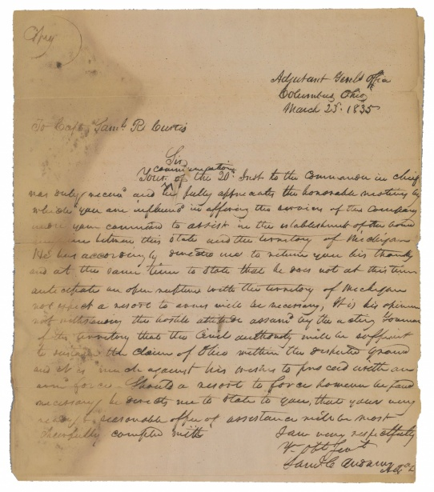
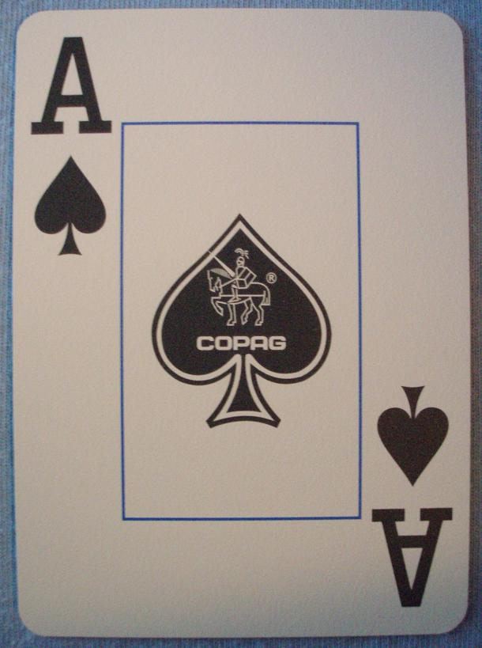

Capítulo 1: Primeiras Pistas
Rumores apontam para a **Bica do Ipu**, um local onde história, mitos e natureza se encontram. A lenda diz que a beleza da queda d'água esconde um segredo dos antigos índios tabajaras, algo relacionado à verdadeira história de Iracema.
Nosso próximo passo é investigar a área da Bica. Dizem que um velho morador deixou uma série de charadas e um QR Code escondido que revelará a próxima localização da estátua. Precisamos seguir as pistas.
Itens Encontrados:
- *Chave (Desbloqueado)
- *Escritura
- *Cartas
Chave

Escritura

Cartas